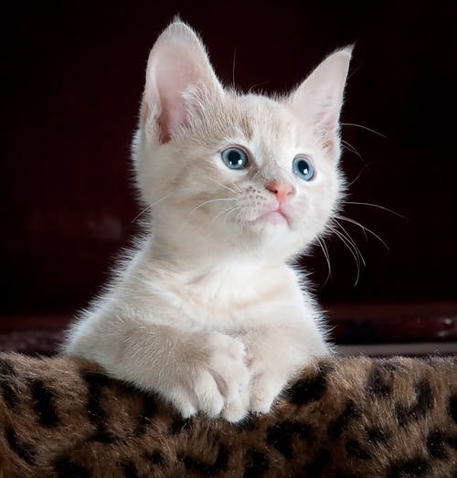

★우리 야옹이★
우리 집 아이들, 고양이들을 소개하겠습니다!
- 우리 집 야옹이 소개 .
- 기르는 주인 소개 .
- 고양이 사진 모집.
우리 집 야옹이 소개
-
스바루(흰색에 호랑무늬,남자)
눈과 귀가 크고 멋진 미남.
우는 소리조차 귀엽다.
어린 시절을 원룸에서 보낸 탓인지 다른 고양이에게 관심이 없는 편이다.
성격은 지극히 자기 중심적. 골판지 상자 모서리나 기둥에 발톱 갈기를
좋아한다.

특징: 커다란 눈과 귀, 말린 꼬리. 성격: 자기 중심적
더보기
그레코(잿빛 털,여자)
갓 태어났을 때는 아메리칸 쇼트헤어 같았는데 크면서 점점 잿빛
고양이로 바뀌었다. 긴털을 가진 품종의 혈동이 좀 섞였는지 털이
부드럽고 푹신푹신하게 부풀어 있어 가족들이 애교를 잘 부리고 처음 보는
사람에게도 낯을 가리지 않고 스스럼 없이 다가오기 때문에 사람들이
굉장히 귀여워 한다.

특징: 새된 소리, 데굴데굴 구르며 공격. 성격: 애교가 많다.
더보기
네즈코(흰색과 갈색무늬.여자)
그레코와 함께 우리집에 온 흰색 빛이 도는 어린 고양이.
그레코와는 달리 전형적인 고양이 성격. 호의적인 태도보다는
오히려 적대적인 태도를 보일 때가 많다(눈물).
그레코와 벌인 세력 쟁탈전에서 패배한 후 집을 나가 지금은 거의
들고양이 신세가 되었다. 생김새는 원래 순 토종 풍으로 깨끗했었는데
밖에서 살던 중에 까마귀의 공격을 받아 한쪽 눈을 잃었다.
고고한 고양이

특징: 한쪽 눈, 작은 얼굴. 성격: 자존심이 강하다. 사람에게는 여왕처럼 군다.
더보기
기르는 주인소개
H.N:roka404 하는 일:프리랜서로 웹 관련 일을 하고 있다.mail:info@hogehoge.com
web:http://www.hogehoge.com
고양이 사진모집 갤러리 페이지를 기획중입니다.
여러분의 소중한 고양이를 소개해 보세요♪
고양이 열 마리가 모이면 페이지를 개설하겠습니다!
응모는 이쪽
Copyright&Copy;UCHI NO NYANS'S ALL Rights Reserved.